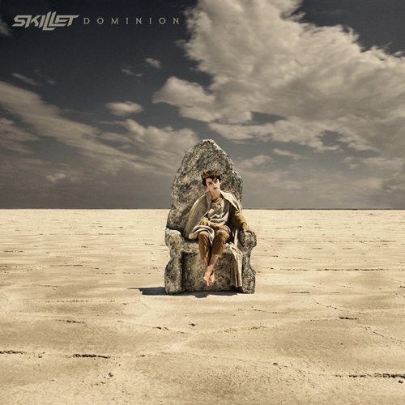

Dominion ist das elfte Studioalbum der US-amerikanischen christlichen Rockband Skillet. Es wurde am 14. Januar 2022 über Atlantic Records veröffentlicht. Produziert wurde das Album von Kane Churko, Kevin Churko, Michael O'Connor und Seth Mosley. Es ist ihr letztes Studioalbum, das über das langjährige Plattenlabel Atlantic veröffentlicht wird.
